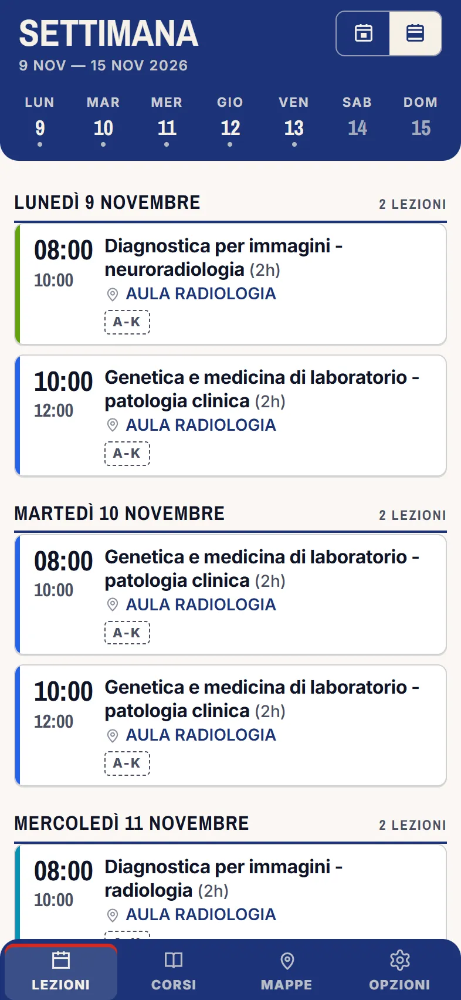
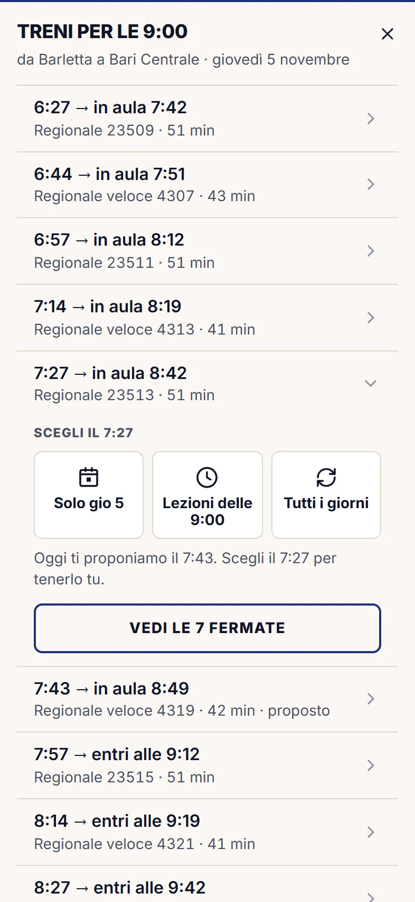
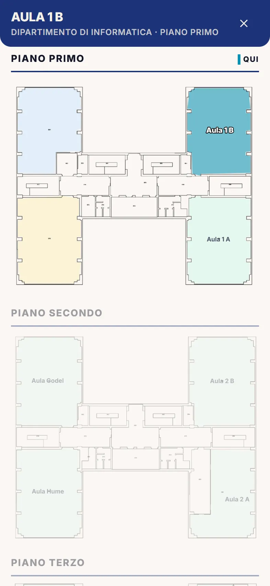
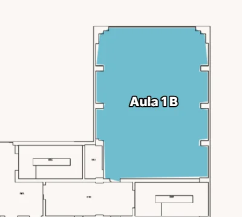

Le tue lezioni, l'aula e il treno per arrivarci
L'orario del tuo corso all'Università di Bari o al Politecnico, sul telefono: con la pianta del piano dove sta l'aula e il treno da prendere per arrivare in tempo. Gratis e non ufficiale.
Versione 1.4.0 del 21 novembre 2026 · 6,3 MB · Android 8 o successivo.Su iPhone non c'è ancora.

Dalla stazione all'aula, senza chiedere a nessuno
Il treno per arrivare in tempo, e quello per tornare
Scegli la stazione da cui parti. Per ogni giorno di lezione Sciamn ti propone il treno e ti dice a che ora entri in aula, contando i minuti a piedi. Se preferisci un altro treno lo scegli tu: solo per oggi, per le lezioni di quell'ora o per tutti i giorni.
Orari di Trenitalia, Ferrotramviaria, Ferrovie Appulo Lucane e Ferrovie del Gargano. Ritardi in tempo reale per Ferrotramviaria e Ferrovie Appulo Lucane.

La giornata, dal treno all'aula
Sopra le lezioni c'è il biglietto del treno da prendere, con l'ora in cui entri in aula; sotto, i treni per tornare. Le esercitazioni e i laboratori sono segnati, le lezioni annullate barrate, e un colore distingue ogni corso.
Ti avvisa prima della lezione e, se vuoi, mette il telefono in silenzioso quando sei in aula.

L'aula sulla pianta del piano
Tocchi l'aula della lezione e la vedi sulla pianta, con il piano a cui salire.
Per ora le piante ci sono solo per il Dipartimento di Informatica e il Palazzo delle Aule.


Guarda l'orario del tuo corso sul sito
Per i corsi dell'Università di Bari, aggiornato ogni mattina. Non serve installare niente.
Si installa in tre passi
- Primo passo: Tocca Scarica l'app per Android e apri il file quando ha finito.
- Secondo passo: Android chiede di consentire l'installazione da questa fonte (il browser): Impostazioni › Consenti, poi torna indietro e tocca Installa.
- Terzo passo: Apri Sciamn e scegli il tuo corso. Da lì in poi si aggiorna da sola.

Sei al computer? Inquadra il codice col telefono e il download parte da lì.
Se qualcosa non va
Play Protect avvisa
Succede con tutte le app che non vengono dal Play Store. Tocca “Altri dettagli › Installa comunque”.
“App non installata” o conflitto con un pacchetto esistente
Hai una versione di prima del 28 settembre: disinstallala e riprova.
Verifica che il file sia autentico
L'app è firmata con una chiave che resta la stessa a ogni versione. Prima di installare puoi confrontare questa impronta con quella che stampa apksigner verify --print-certs uniplanner.apk (riga “certificate SHA-256 digest”), o con quella che mostra l'app AppVerifier.
Certificato di firma, SHA-256:b308fd67 e787dbb3 2368f9dd 268ab3e9 645b09e0 72cae7be 410775ac d368bb5b
File della 1.4.0, SHA-256:8c56d11633892bc3ae305a7ff8a2ba5308c186282169ac807644586eda101fcf
Novità della 1.4.0
- Puoi condividere come immagine l'orario del giorno o della settimana, col pulsante accanto a Giorno e Settimana.
- Sotto le lezioni vedi il treno per arrivare in aula e quello per tornare a casa, dalla stazione che scegli in Opzioni › Viaggi, con il ritardo in tempo reale di Ferrotramviaria e FAL e gli scioperi che toccano i tuoi treni.
- In Mappe trovi in cima l'aula della prossima lezione e cerchi aule ed edifici: per 29 edifici dell'Università di Bari si aprono sulla pianta del piano.
- Sulla mappa di Bari tocchi una sede e apri la sua scheda. Con «Dove sono io» vedi dove sei, e la posizione resta sul telefono.
- Una volta al giorno l'app manda un conteggio anonimo di chi la usa e, se si è bloccata, cosa è successo. Lo spegni in Opzioni › Informazioni.
- L'app si apre più in fretta. I corsi del Politecnico di Bari che hanno solo la settimana tipo mostrano le lezioni di ogni settimana.